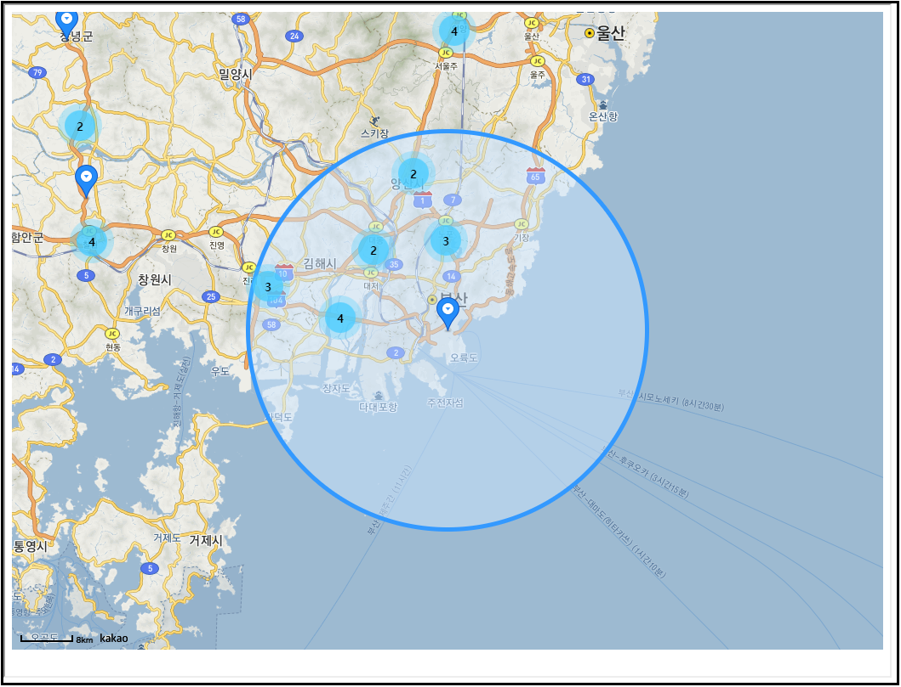

1. IC 선택
휴게소 찾기 탭에서 내 위치의 마커를 좌클릭 해줍니다.
반경 내에 있는 IC 클릭 시
해당 고속도로의 모든 휴게소가 표시됩니다.

이용 안내
휴게소 찾기 탭에서 내 위치의 마커를 좌클릭 해줍니다.
반경 내에 있는 IC 클릭 시
해당 고속도로의 모든 휴게소가 표시됩니다.
상세정보 선택 란에서 원하는 편의시설을 체크합니다.
여러개의 편의시설도 체크 가능하며,
체크 후 검색을 누릅니다.
체크한 편의시설이 있는 휴게소 마커가 띄워집니다.